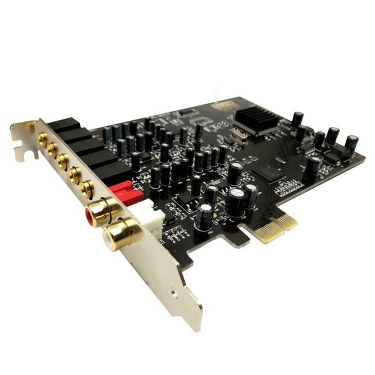
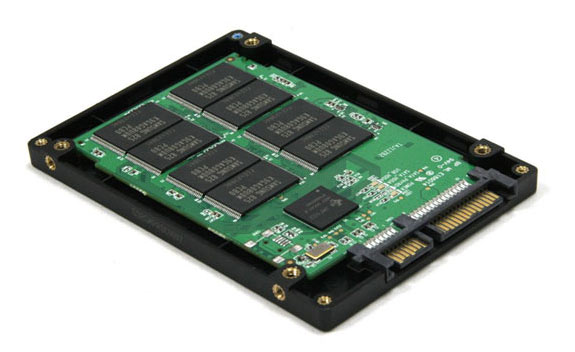

O que é?
Hardware é todo e qualquer componente ou equipamento físico, tanto dentro quanto fora da
Tecnologia da Informação. De uma maneira geral, qualquer máquina, ferramenta ou utensílio,
de uma máquina de fresa a uma chave-inglesa, passando pelo seu celular ou computador é um
hardware. Talheres, peças, dobradiças, engrenagens, parafusos, chips, processadores, tudo isso
é hardware.
Em Tecnologia da Informação, o conceito se aplica aos componentes de dispositivos em geral,
como processador, placa-mãe, memória RAM, unidades de armazenamento (HDs, SSDs e memória Flash),
bem como a dispositivos de entrada e saída (teclado, mouse, monitor, caixas de som, controle remoto,
controle de videogame, etc).
Em geral, o termo é usado para se referir aos componentes internos de um computador, celular, tablet
e outros dispositivos. Eles precisam de softwares para serem operados, mas são elementos distintos.
Sobre isso, uma antiga piada em TI separa bem o software do hardware: “software é o que você xinga.
Hardware é o que você chuta”.
Exemplos
 |
Coolers
O cooler é um componente que extrai o calor de um chip da CPU ou de outros chips de execução que geram
calor, como um processador gráfico; E também permite que o PC trabalhe melhor, sem erros ou queda de
rendimentos - placa de vídeo (GPU). |
| Disco Rígido (HD)
O disco rígido — HD (Hard Disk) ou HDD (Hard Disk Drive) — é o dispositivo de armazenamento de dados mais
utilizado nos computadores. Esse tipo de equipamento guarda desde os seus arquivos pessoais até informações
utilizadas exclusivamente pelo sistema operacional. |
 |
| |
Fontes
Como o próprio nome sugere, a fonte de alimentação é o componente de onde surge a energia necessária para que
as demais peças do computador funcionem. Até aí nenhum segredo. É possível ainda que você tenha uma noção de
que a fonte de alimentação desenvolve o importante papel de transformação da energia. |
| Memória RAM (HD)
A memória RAM é responsável pelo armazenamento de informações necessárias para a execução de aplicativos em uso
e para o funcionamento do próprio sistema operacional. Essa peça, inclusive, facilita o trabalho do processador
que pode acessar os dados essenciais mais rapidamente. |
 |
| |
Placa de vídeo
As placas de vídeo são itens de hardware responsáveis pela geração das imagens que são exibidas
na tela do computador (incluindo videogames, smartphones, etc). |
| Placas de Som
Placa de som é um dispositivo de hardware que envia e recebe sinais sonoros entre equipamentos de som e um computador
executando um processo de conversão entre a forma digital e analógica para outros periféricos como fones de ouvido ou
provendo interfaces para outros equipamentos digitais. |
 |
| |
Placas-mãe
A placa-mãe abriga processador, memória RAM e outros componentes por meio de conexões padronizadas. |
| Processadores
O processador, também chamado de CPU (central processing unit), é o componente de hardware responsável por processar
dados e transformar em informação. Ele também transmite estas informações para a placa mãe, que por sua vez as transmite
para onde é necessário (como o monitor, impressora, outros dispositivos). |
|
|  |
SSD
O SSD (Solid State Drive ou unidade em estado sólido) é um componente de hardware que substitui o antigo HD (Hard Disk
ou disco rígido) como unidade de armazenamento de dados nos PCs. Muito mais rápido, o SSD não possui discos físicos ou
agulhas magnéticas, sendo capaz de acessar dados em uma fração de segundo e tornar seu computador mais ágil para abrir
programas e executar tarefas. |
| Switch KVM
Switch KVM ou Chaveador KVM (abreviatura do inglês de: "Keyboard, Video and Mouse", tradução: teclado, monitor e mouse)
é um dispositivo de hardware que permite ao usuário controlar vários computadores usando somente um teclado, monitor e mouse. |
|
| |
Rede Wired (com fio)
Rede de computadores que utiliza de fios e cabos para se conectar e compartilhar dados, software, etc, com outros computadores.
Apesar de suas diferenças, tanto a rede cabeada quanto a wireless oferecem vantagens interessantes aos usuários. |
| Rede Wireless (sem fio)
Rede wireless nada mais é do que uma rede sem fio, trata-se de uma rede que transmite informações para um ou mais dispositivos
sem usar nenhum tipo de cabo. |
|